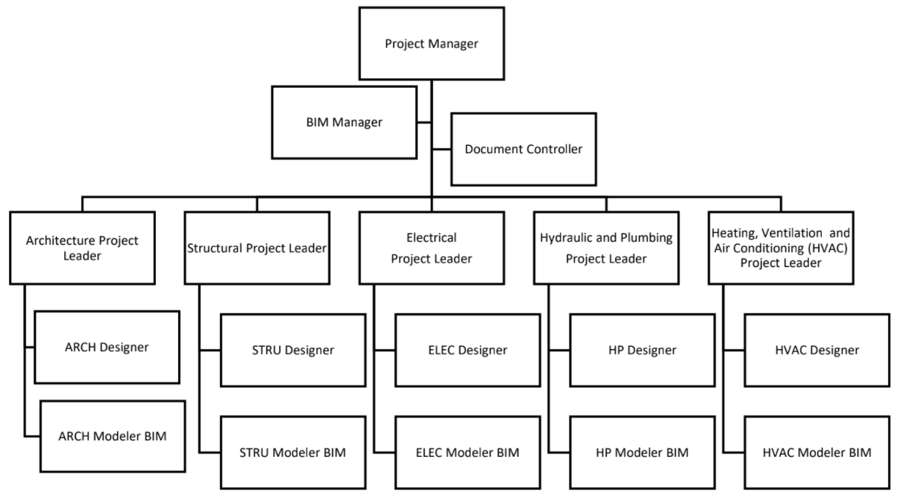

¿Cómo se trabaja un proyecto BIM? (2016)
Villa de Reyes, San Luis Potosí, México es donde se ubica la primera planta ensambladora de BMW en México iniciando el proyecto en 2014. Siendo en el 2016 cuando se pone la primera piedra. La planta armadora se construyó en una superficie de 300 hectáreas en el Parque Industrial Logistik II.
La inversión fue de 1,000 millones de dólares. La construcción concluye en marzo 2018 y en abril del 2019 inicia operaciones. La nueva planta produce 35 vehículos cada hora, pero la meta es que al cerrar 2019 esté preparada para fabricar una unidad por minuto (60 autos por hora).

1. ¿Por qué BIM?
BMW empresa líder en fabricación de automóviles, no puede perder tiempo ni dinero de la costosa inversión en la etapa de construcción. Planea que en esta planta ensambladora fabricar una unidad por minuto, saca cuentas y verás cuánto pierde por cada día de retraso. Es por lo que, como requisito indispensable para el proyecto de sus plantas (26 en todo el mundo) es la utilización de la metodología BIM y Lean Costruction.
2. Contratistas
Para el proyecto de la nueva planta fueron muchos los contratistas y sub-contratistas encargados del diseño bajo los estándares alemanes y normas de construcción mexicanas, siendo obligatorio el uso de los softwares BIM:
- Revit 2015 para las disciplinas de Arquitectura, Estructura, Civil, Eléctrica, HVAC, Hidráulica Sanitaria y PCI.
- Tekla para modelado de estructura metálica
- Navisworks 2015 para revisión de interferencias
- ThinkProject como programa interno de la supervisora (AECOM)
Algunos contratistas involucrados en el diseño fueron: GP Construcciones, Constructora Chufani, Voltrak, entre muchos otros subcontratistas.
3. Trabajo colaborativo
Otro de los requisitos para ser contratista de BMW fue tener a todo su equipo de diseño en sitio, esto para tener un trabajo colaborativo real y reducir tiempos en coordinación entre ellos. El organigrama del equipo de diseño fue el siguiente:
4. Prueba y Error
Cuando los contratistas entraron al proyecto creíamos saber lo que era BIM, sin embargo, poco (por no decir que ninguno) había trabajado realmente bajo la metodología.
Después de tener aprobado el diseño arquitectónico y estructural, la siguiente entrega fueron los planos, estos deberían de salir directamente del programa de Revit, es decir, del modelo 3D. En este punto descubrimos nuestro primer problema, ya que para iniciar el proyecto todos tendríamos que trabajar con el mismo template ya que éste contenía las coordenadas del sitio y de cada uno de los edificios, así como los estilos, tipos de texto y líneas. Para cuando nosotros empezamos el trazo, el template de nuestros edificios seguía en desarrollo por lo que tuvimos que empezar si el template… ¡Error! Ya que aprendimos que los planos no se pueden copiar de archivo a archivo y los tuvimos que re-hacerlos cuando el template estuvo listo, pero nuestro primer objetivo era cumplir con la entrega así que el trabajo doble era parte del aprendizaje.
Otro error en el que caímos fue trabajar en 2D, CAD, ya que era más fácil hacer las correcciones de los planos en 2D que en 3D, por ejemplo, los detalles de uniones era más fácil hacer una polilínea que una familia de la conexión, sin embargo, cuando cambiábamos esa conexión por "x o y" razón, nuestro detalle no se actualizaba.
Para esto tuvimos que realizar ciento, sí cientos, de familias para cada elemento de conexión, así como cada elemento que no estaba en la librería de Revit. Suena y fue mucho trabajo, pero ese tiempo y esfuerzo se compensaba con la velocidad en la maquila de planos y correcciones de los mismos, sin mencionar que íbamos trabajando el modelo As Built.
5. Revisión by BIM Manager
Los planos y modelos que entregaba cada disciplina eran revisados por el BIM Manager de cada BID Package, una vez que revisaba que los planos y modelos estuvieran conforme al Standar Manual entregado por BMW se subían los archivos digitales en formato PDF y DGN los planos y el modelo en extensión RVT a la plataforma de ThinkProject para revisión del BIM Manager de la supervisora de diseño AECOM, él los revisaba y coordinaba con los modelos con los de los diferentes Bid Packages.
Se revisaba colisiones internas entre disciplinas mediante el software Navisworks, se analizaban los modelos con todas las combinaciones posibles de choque (ARCH vs STRU, ARCH vs MEP, STR vs MEP, etc) y una corrida de todas las disciplinas. En este punto fue interesante el criterio del BIM Manager para la revisión de interferencias, ya que el programa no es capaz de identificar las interferencias lógicas entre elementos, por ejemplo, los elementos estructurales que pasaban por muros o plafones de arquitectura eran válidas ya que físicamente existía y el programa las marcaba como error aquí en donde en el informe se señalaba la opción de pasar interferencia.
6. Document controller
Para tener un control real de la documentación del proyecto, también se utilizó la metodología, desde cómo nombrar cada archivo hasta su ingreso de forma digital en la plataforma de Thinkproject, donde en cualquier momento se podrían consultar los planos y el estatus de estos, así como de los, submittals, las órdenes de cambio, memorias descriptivas, memorias de cálculo y demás documentos.
Dichos documentos también se revisaban por parte de la supervisora de diseño y construcción y mucho de ellos estaban linkeados dentro de los modelos de Revit.
7. As Built
Los modelos y por ende los planos se actualizaban con forme se iba terminando de construir los “vagones” de construcción, de esta manera al concluir la construcción de un edificio el modelo ya estaba en estatus AS BUILT.
En esta etapa fue interesante la colaboración con el equipo de construcción ya que estos también se involucraban con los modelos 3D liberados para construcción. El Construction Manager era el encargado de marcarlos cambios que se realizaban en sitio ya sea que se agregaran elementos, o el movimiento de piezas por alguna razón que en diseño no se percibió o incluso eliminación de ciertos elementos. Sí, aún con BIM existen este tipo de cambios en obra, pero son menores y menos costosos que los que se presentan de manera tradicional.
Cabe mencionar que parte de la metodología BIM y Lean Construction es el aprendizaje continuo, ajustar y avanzar. Lo veremos en un artículo más adelante.